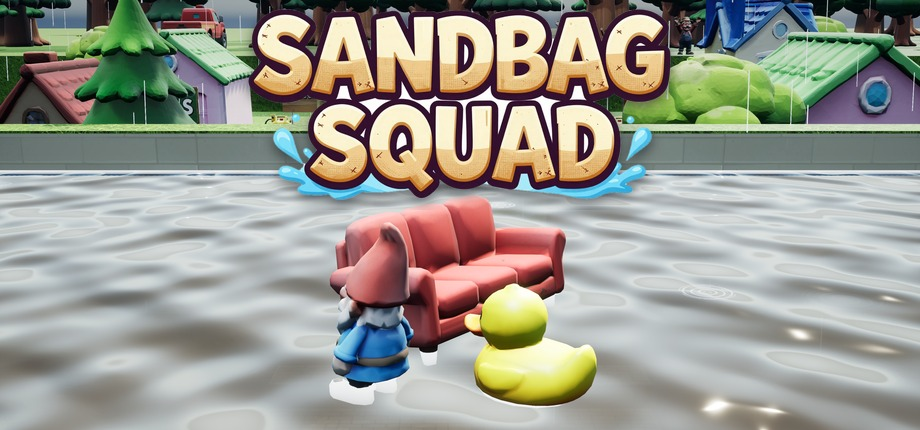
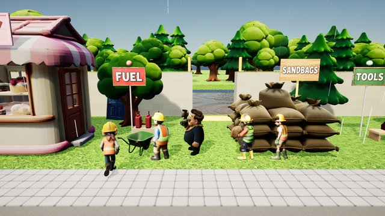
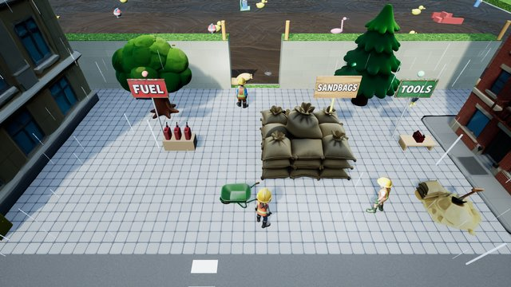
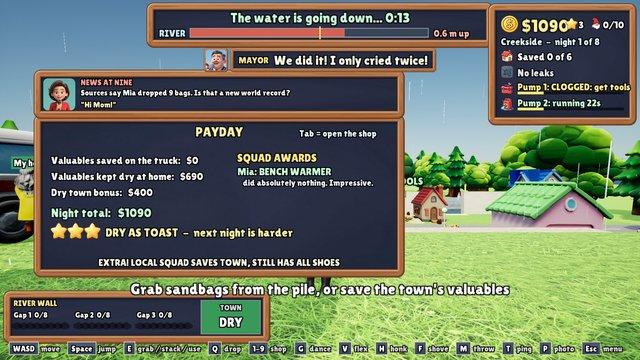
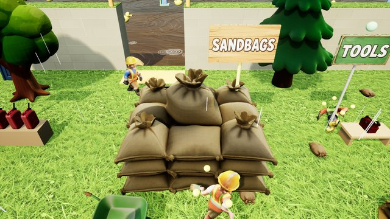
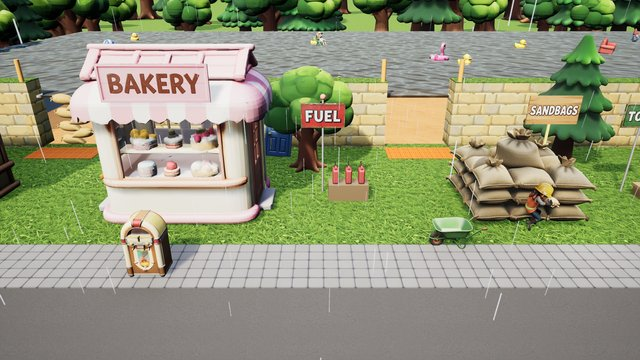
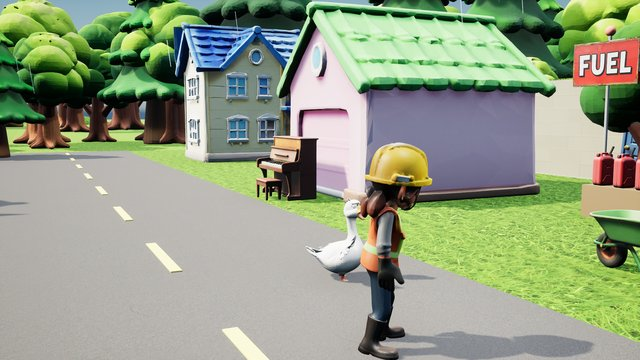
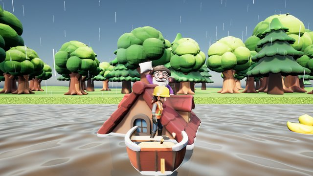
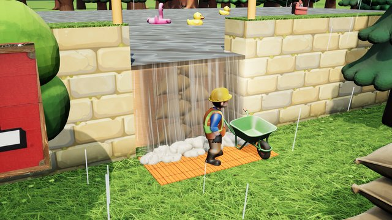

Sandbag Squad: press kit
- Developer
- Kelbra Games (Kelbra Business Solutions LLC), Missouri, USA
- Release
- 2027, Steam (Windows PC). Exact date and price to be announced.
- Players
- 1 to 4, co-op, or solo
- Genre
- Casual co-op, comedy, simulation
- Setting
- Five little towns on a rising river, from Creekside to Big City
- Engine
- Unreal Engine 5
- Language
- English (interface and on-screen text; no voice acting)
- Press contact
- support@kelbrasolutions.net
- Pages
- Support · Privacy
The game
The siren is going. The river is coming. You have a shovel and a very small wall.
Every night the river rises on a little town. Fill sandbags at the pile, carry them, stack them into a wall, plug the leaks and keep the pumps running, and save everything that matters before the water crests. A night takes about 4 minutes at the start and about 9 by night 8.
- Prep. The siren sounds. Pick your gear and read the storm radio.
- Hold the line. Fill, carry, stack, pump, plug, and carry the town's valuables to the rescue truck.
- Crest. The water peaks. Walls that held, hold. Walls that did not, collapse in slow motion.
- Payday. Money for every valuable saved and every house kept dry, to spend before the next, worse night.
Some things take two: the piano, the cow (who will wander off), Grandma Pearl and Mr. Whiskers on the roof. Every night finds a new way to go wrong: a sneaky dog steals bags off your wall, a car floats down the river and jams itself in a gap, a pizza guy hands out slices for a speed boost, and from night 4 an alligator may be around.
Features
- 1 to 4 player co-op, or play alone.
- 5 towns, 8 nights each: Creekside, Main Street, Dairy Farm, Old Mill and Big City, with the flood getting worse every night.
- Pumps, leaks, sandbag walls and heavy rescues: the walls hold or they collapse, and the collapse is the joke.
- The water fights back: deep water sweeps you down the street, and wet boots slow you down.
- A shop with four real upgrades (boots, arms, fuel can, pumps) plus silly hats, outfits and moon boots.
- A daily storm with a silly rule that changes each day, and an endless mode.
- Remappable keys and buttons, and 3 save slots.
- Bright, cartoony and a little silly: no blood and nothing scary.
Screenshots
All pictures are real in-game captures (1920x1080). Click a picture for the full size.
















Logo and art


Download all images (zip, 8 MB)
All 8 screenshots, the Steam capsules, the logo and the icon. A trailer made from real gameplay will be on the Steam page; email us if you need the video file.
Content
Cartoon flooding for all ages. No blood and no violence beyond shoving a friend into the river; a cartoon alligator "chomps".
About AI use
The game's textures, 3D props and models, rescue workers, mud pictures, icons and achievement pictures were made during development with open-source AI tools and then reviewed and finished by the developer. The music and sound effects are made by the game's own code, and the characters' lines are on-screen text. Nothing is generated while you play. The store pictures and this press kit use only real in-game captures.
About Kelbra Games
Kelbra Games is a small independent studio in Missouri. Sandbag Squad is one of three co-op games it is bringing to Steam.